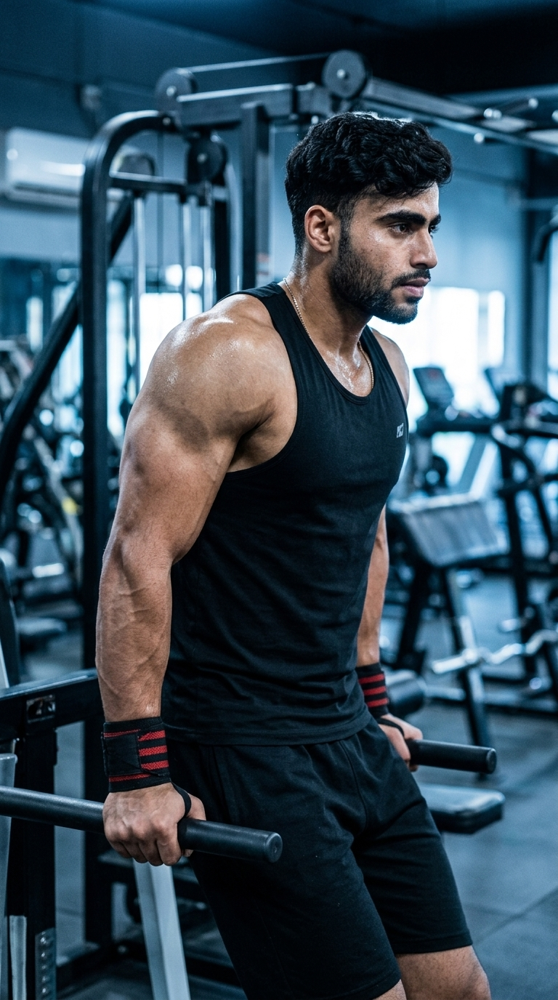

Primary Muscle
Triceps Brachii
Build Stronger, Bigger Triceps While Improving Upper-Body Strength and Pressing Power
The Triceps Dip is a highly effective compound bodyweight exercise that primarily targets the triceps while also engaging the chest, shoulders, and core for stability. Whether performed on parallel bars or assisted dip machines, this movement builds upper-body strength, increases arm size, and enhances pushing performance. By controlling your body position and range of motion, the Triceps Dip becomes one of the best exercises for developing stronger, more defined triceps and improving overall upper-body muscle mass.

Triceps Brachii
Parallel Bars
Intermediate
Compound
Discover which muscles power the Triceps Dip and how the supporting muscles work together to stabilize the shoulders and upper body while producing powerful elbow extension and maximum triceps activation.
Long Head, Lateral Head & Medial Head
Chest Pressing Assistance
Shoulder Stabilizer
Body Stability
Discover how the Triceps Dip strengthens the triceps, improves upper-body pushing power, builds muscle mass, and enhances overall functional strength through a challenging compound bodyweight exercise.
Triceps Dips place significant tension on all three heads of the triceps, promoting greater arm strength and muscle growth.
This compound movement develops the chest, shoulders, and triceps together, increasing overall pushing strength for sports and weight training.
Stronger triceps improve pressing performance in exercises such as the bench press, overhead press, and other pushing movements.
Regularly performing Triceps Dips helps develop thicker, more defined upper arms while improving overall upper-body aesthetics.
Proper technique strengthens the muscles that stabilize the shoulders and improves control during compound pushing exercises.
Triceps Dips can be performed using parallel bars, dip stations, or assisted dip machines, making them an effective strength exercise in almost any gym.
Follow these step-by-step instructions to perform the Triceps Dip with proper body position, controlled movement, and strict elbow extension to maximize triceps activation while building upper-body strength safely.
Grip the parallel bars firmly with your arms fully extended. Keep your chest lifted, core braced, and legs slightly bent or crossed behind you.
Keep your shoulders down and away from your ears before starting the movement.
Slowly bend your elbows and lower your body until your upper arms are approximately parallel to the floor while keeping your elbows close to your sides.
Avoid flaring your elbows to maintain greater triceps involvement and shoulder stability.
Push through your palms and extend your elbows to raise your body back to the starting position without swinging or using momentum.
Drive through your triceps instead of relying on your shoulders to complete the movement.
Pause briefly at the top with your elbows nearly straight and contract your triceps before beginning the next repetition.
Focus on a strong triceps contraction rather than rushing through the exercise.
Continue each repetition with a slow, controlled tempo while maintaining proper body alignment and a consistent range of motion.
Master your bodyweight first before adding extra resistance with a dip belt.
Avoid these common technique mistakes to maximize triceps activation, improve upper-body strength, and perform the Triceps Dip safely and effectively.
Excessive forward lean shifts the workload toward the chest and shoulders, reducing emphasis on the triceps.
Keep your torso more upright and your elbows close to your body to maximize triceps activation.
Allowing the elbows to move outward places unnecessary stress on the shoulders and reduces triceps involvement.
Keep your elbows tucked close to your sides throughout the entire movement.
Swinging your legs or bouncing through the movement reduces muscle tension and makes the exercise less effective.
Perform every repetition with a slow, controlled tempo and avoid using body momentum.
Descending beyond your comfortable shoulder range can place excessive stress on the shoulder joints and increase injury risk.
Lower until your upper arms are roughly parallel to the floor, then press back up under control.
Apply these expert coaching cues to improve your Triceps Dip technique, maximize triceps activation, and build greater upper-body strength with every repetition.
Maintain a more upright body position throughout the movement to place greater emphasis on the triceps instead of the chest.
An upright torso shifts more of the workload to your triceps.
Allow your elbows to travel naturally while keeping them close to your sides to improve triceps activation and shoulder stability.
Tucked elbows create a stronger and safer pressing path.
Lower your body slowly and press upward with control to keep constant tension on the triceps throughout the exercise.
Controlled reps build more muscle than fast, momentum-based repetitions.
Perform smooth, full-range bodyweight repetitions before progressing to weighted dips with a dip belt.
Perfect technique comes before added resistance for long-term strength and injury prevention.
Progress from mastering bodyweight Triceps Dips to performing advanced weighted variations while maintaining proper technique, full range of motion, and maximum triceps activation.
Learn proper body alignment, elbow positioning, and controlled movement using only your bodyweight before attempting more challenging variations.
Proper posture, shoulder stability, controlled range of motion, and strict technique.
Perform smooth, controlled repetitions while keeping your elbows close to your body and maintaining an upright torso throughout the movement.
Controlled tempo, elbow positioning, body stability, and consistent movement quality.
Once bodyweight dips become comfortable, gradually increase the challenge by using a dip belt or other external resistance while maintaining perfect form.
Progressive overload, stronger triceps, strict technique, and full range of motion.
Increase training intensity with weighted dips, slower eccentrics, paused repetitions, or higher training volume while maintaining flawless technique.
Advanced strength development, maximum triceps growth, progressive overload, and perfect movement mechanics.
Find answers to common questions about Triceps Dip technique, muscles worked, proper form, training frequency, and how to maximize triceps strength and upper-body development safely and effectively.
Triceps Dips primarily target the triceps brachii while also engaging the pectoralis major, anterior deltoids, and core to stabilize and control the movement.
Triceps Dips are a compound bodyweight exercise that allows you to overload the triceps while also building upper-body pushing strength and muscle mass.
For greater triceps emphasis, keep your torso relatively upright. Excessive forward lean shifts more of the workload to the chest and shoulders.
Yes. Beginners can start with assisted dip machines or resistance bands until they build enough strength to perform full bodyweight repetitions with proper technique.
For muscle growth, perform 3–4 working sets of 8–12 repetitions. For strength development, perform 3–5 sets of 4–8 repetitions while maintaining excellent form.
Yes. Once you can perform multiple bodyweight repetitions with excellent technique, you can gradually increase the challenge by using a dip belt or holding a dumbbell between your legs.
Explore other triceps exercises that complement the Triceps Dip and help you build stronger, bigger arms through both compound and isolation movements using different equipment and training variations.


Continue building stronger, bigger triceps with step-by-step exercise guides covering proper technique, muscles worked, common mistakes, expert coaching tips, and progression strategies for every fitness level.